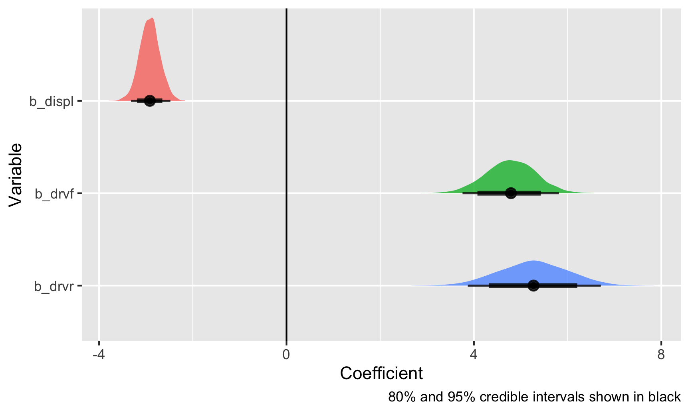
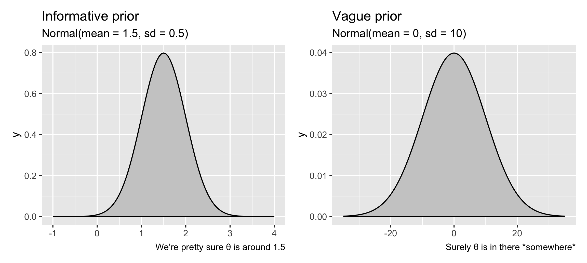
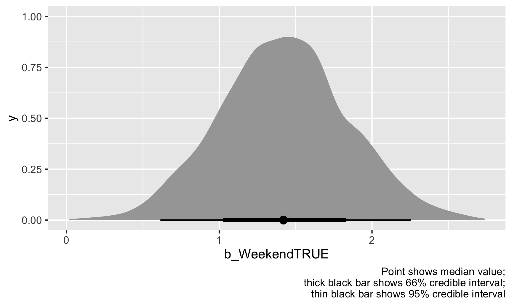
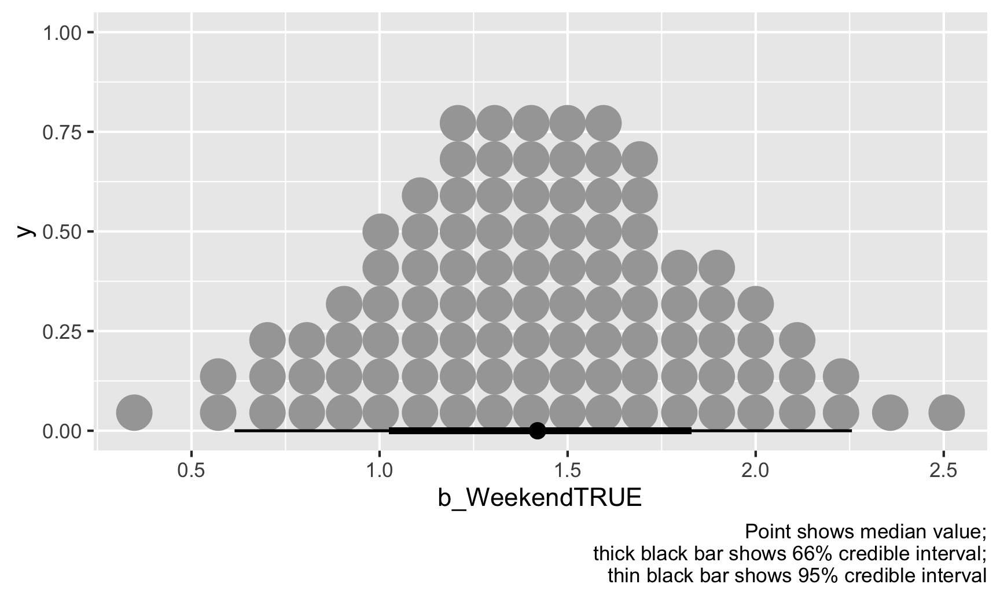
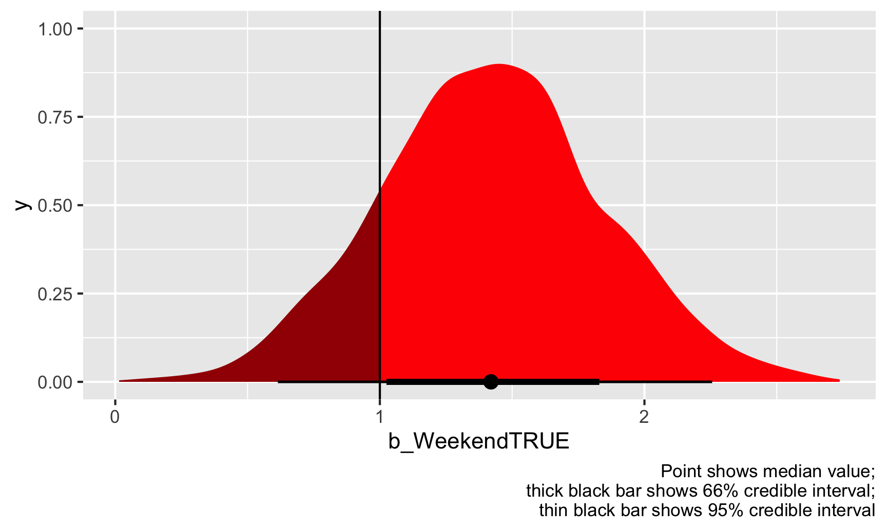
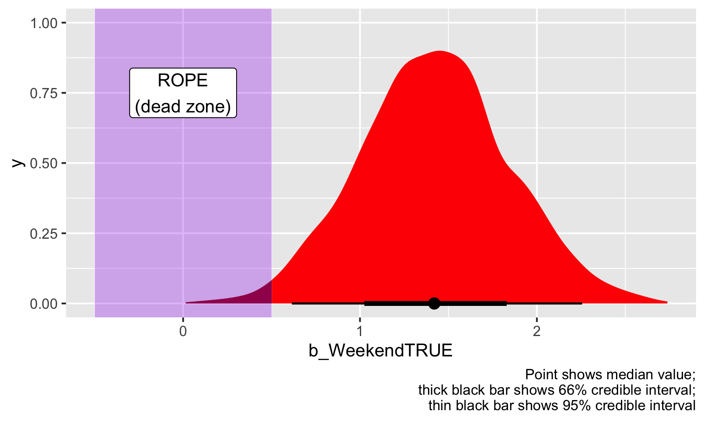
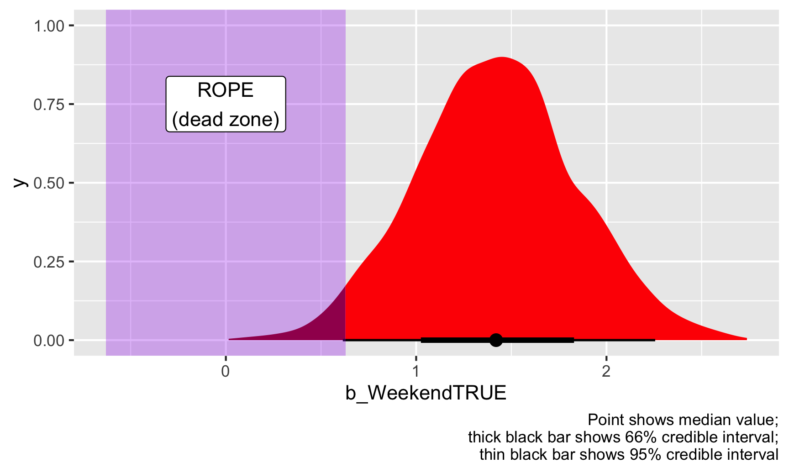

In class session 2 (see this from the FAQ slides) we talked briefly about the difference between frequentist statistics, where you test for the probability of your data given a null hypothesis, or \(P(\text{data} \mid H_0)\), and Bayesian statistics, where you test for the probability of your hypothesis given your data, or \(P(H \mid \text{data})\).
This difference is important. In the world of frequentism and null hypothesis significance testing (NHST), which is what pretty much all statistics classes use (including this one!), you have to compare your findings to a hypothetical null world and you have to talk about rejecting null hypotheses. In the Bayes world, though, you get to talk about the probability that your hypothesis is correct rather than the probability of seeing a value in a null world. So much more convenient and easy to interpret!
Bayesian statistics, though, requires a lot of computational power and a different way of thinking about statistics and numbers in general. And very few classes teach it. Including this one! I use Bayesian stats all the time in my own research (see this or this, for instance), but don’t teach it (yet!) because nobody else really teaches it and frequentist statistics still rule the policy world, so you need to know it.
Resources
But you can learn it on your own. Because very few stats classes actually teach Bayesian statistics, tons of people who use it are self-taught (like me!), in part because there are a ton of resources online for learning this stuff. Here are some of the best I’ve found:
This new Bayes Rules book is designed to be an introductory textbook for a stats class teaching Bayesian stuff. It’s really accessible and good (and free!). If I ever get to teach an intro stats class with Bayesian stats, I’ll use this.
This post from 2016 is a great short introduction and is what made me start using Bayesian methods. The brms package makes it incredibly easy to do Bayesian stuff, and the syntax is basically the same as lm()
This post shows how to do one simple task (a difference-in-means test) with regular old frequentist methods, bootstrapping, and with Bayesian stats both with brms and raw Stan code
This short post gives a helpful overview of the intuition behind Bayesianism
The Theory That Would Not Die is a fun little general introduction to the history of Bayesianism and why it kind of disappeared in the 20th century and was replaced by frequentism and p-values and null hypothesis testing
Super short example
In practice, the R code for Bayesian models should be very familiar. For instance, here’s a regular old frequentist OLS model:
Here’s that same model using the brms package, with default priors. Note how the code is basically the same:
Code
library(tidyverse)library(brms) # For Bayesian regression with brm()library(broom.mixed) # For tidy() and glance() with brms-based modelslibrary(tidybayes) # For extracting posterior draws
Code
# This will take a few seconds to runmodel_bayes <-brm(hwy ~ displ + drv, data = mpg)
In Bayes land, you get a distribution of plausible values given the data (or what is called the “posterior distribution”), and you can visualize this posterior distribution:
Code
# Make a long dataset of the draws for these three coefficientsposterior_draws <- model_bayes %>%gather_draws(c(b_displ, b_drv, b_drvf, b_drvr))# Plot this thingggplot(posterior_draws, aes(x = .value, y =fct_rev(.variable), fill = .variable)) +geom_vline(xintercept =0) +stat_halfeye(.width =c(0.8, 0.95), alpha =0.8, point_interval ="median_hdi") +guides(fill ="none") +labs(x ="Coefficient", y ="Variable",caption ="80% and 95% credible intervals shown in black")

Those are all the plausible values for these coefficients, given the data that we’ve fed the model, and the black bars at the bottom show the 80% and 95% credible intervals (or the range of values that 80/95% of the posterior covers). With this, there’s a 95% chance that the coefficient for displacement is between −3.35 and −2.48. Neat!
Confidence intervals vs. credible intervals
In session 6, we talked about frequentist confidence intervals and Bayesian credible (or posterior) intervals, since I had you read Guido Imbens’s essay on p-values, where his conclusion is that:
It would be preferable if reporting standards emphasized confidence intervals or standard errors, and, even better, Bayesian posterior intervals.
Imbens wants us to use Bayesian posterior intervals (or credible intervals), but how do we do that?
Frequentist confidence intervals
In frequentist statistics (i.e. all the statistics you’ve been exposed to in this class and all previous classes), your whole goal is to estimate and infer something about a population using a sample. This “something” is a true (but unknown) thing called a population parameter. It is a single fixed value that exists out in the world, and it’s the main thing you’re interested in discovering. Here are a bunch of different population parameters:
Average treatment effect of a program
Proportion of left-handed students at GSU
Median rent of apartments in NYC
Proportion of red M&Ms produced in a factory
In frequentist statistics, we take a sample from the population, calculate the parameter (i.e. mean, median, proportion, whatever) in the sample, and then check to see how good of a guess it might be for the whole population. To do that, we can look at a confidence interval. Think of a confidence interval as a net—it’s a range of possible values for the population parameters, and we can be X% confident (typically 95%) that the net is picking up the population parameter. Another way to think about it is to imagine taking more samples. If you take 100 samples, at least 95 of them would have the true population parameter in their 95% confidence intervals. Frequentist statistics assumes that the unknown population parameter is fixed and singular, but that the data can vary—you can repeat an experiment over and over again, or take repeated samples from a population in order to be more certain about the estimate of the parameter (and shrink the net of the confidence interval).
Importantly, when talking about confidence intervals, you cannot really say anything about the estimate of the parameter itself. Confidence intervals are all about the net, or the range itself. You can legally say this:
We are 95% confident that this confidence interval captures the true population parameter.
You cannot say this:
There’s a 95% chance that the population parameter is X. or There’s a 95% chance that the true value falls in this range.
Confidence intervals tell you about the range, or the net. That’s all.
Here’s an example with some data from The Effect on restaurant inspections in Alaska. We want to know if weekend inspections are more lenient that ones conducted during the work week.
First we should look at the data to see if there are any obvious patterns. Let’s look at scores separated by weekend status. We’ll use the neat gghalves package to plot both the raw points and a density plot. The orange points show the average value:
It looks like weekend inspections are far more rare than weekday ones, and no weekend inspections every give scores lower than 80. It also looks like the average weekend score is slightly higher than the average weekday score. Let’s figure out how much of a difference there is.
But first, we’ll use the language of inference and sampling. Our population parameter (we’ll call it the Greek letter theta, or \(\theta\)) is some single true fixed number that exists out in the world—weekend restaurant inspections in Alaska have a \(\theta\) higher average score than weekday inspections. We want to find out what that \(\theta\) is, so we’ll look at some confidence intervals.
We can look at a basic difference in means based on weekend status:
Here, weekend scores are 2.1 points higher than weekday scores, on average (that’s our estimate, or \(\hat{\theta}\). We have a confidence interval of 1.2–2.9. We cannot say that we’re 95% confident that the weekend score boost (or \(\theta\)) is between 1.2 and 2.9. What we can say is that we’re 95% confident that the range 1.2–2.9 captures the true population parameter \(\theta\). If we took a bunch of different samples of inspection scores and calculated the average weekend vs. weekday score in each of those samples, 95% of those confidence intervals should capture the true \(\theta\). Importantly, we still have no idea what the actual \(\theta\) is, but we’re pretty sure that our confidence interval net has captured it.
This estimate is probably wrong, since there are other factors that confound the weekend → score relationship. Maybe the health department only conducts weekend inspections in places with lots of branches, or maybe they did more weekend inspections in certain years. We can adjust/control for these in the model:
Our weekend estimate shrunk a little and is now 1.43, with a confidence interval of 0.6–2.3. Again, think of this as a net—we’re 95% sure that the true \(\theta\) is in that net somewhere. \(\theta\) could be 0.7, it could be 1.4, it could be 2.2—who knows. All we know is that our net most likely picked it up.
For fun, let’s plot both these weekend estimates and their confidence intervals:
Code
# Save just the weekend coefficient from both modelsfreq_results_naive <-tidy(model_naive, conf.int =TRUE) %>%mutate(model ="Naive model") %>%filter(term =="WeekendTRUE")freq_results_full <-tidy(model_adjusted, conf.int =TRUE) %>%mutate(model ="Full model") %>%filter(term =="WeekendTRUE")# Put these coefficients in a single dataset and plot themfreq_results <-bind_rows(freq_results_naive, freq_results_full) %>%# Make sure the model name follows the order it appears in the data instead of# alphabetical ordermutate(model =fct_inorder(model))ggplot(freq_results, aes(x = estimate, y = model, color = model)) +geom_pointrange(aes(xmin = conf.low, xmax = conf.high)) +guides(color ="none")
Bayesian credible intervals
Remember, with frequentist statistics, \(\theta\) is fixed and singular and we’re hoping to pick it up with our confidence interval nets. The data we collect is variable—we can hypothetically take more and more samples and calculate a bunch of confidence intervals and become more certain about where \(\theta\) might be. We can only interpret confidence intervals as ranges: “There’s a 95% probability that the range contains the true value \(\theta\)”. We can’t say anything about the estimate of \(\theta\) itself. We’ve calculated the probability of the range, not the probability of the actual value.
Bayesian analysis, however, does let us talk about the probability of the actual value. Under Bayesianism, the data you’re working with is fixed (i.e. you collected it once and it’s all you have—you can’t go out and collect infinite additional samples), and the population parameter \(\theta\) varies and has uncertainty about it (i.e. instead of imagining some single number uncapturable that’s the average difference in weekend vs. weekday scores, \(\theta\) has some range around it).
This difference is apparent in the formulas for testing hypotheses under each of these approaches:
\[\underbrace{P(\text{Data} \mid \theta)}_{\substack{\textbf{Frequentism} \\ \text{Probability of seeing the} \\ \text{data given that } \theta \text{ exists}}} \qquad \underbrace{P(\theta \mid \text{Data})}_{\substack{\textbf{Bayesianism} \\ \text{Probability of } \theta \\ \text{given the current data}}}\]
Put (hopefully!) simply, combine the observed likelihood of the data \(P(\text{Data} \mid \theta)\) (that’s basically frequentism!) with prior knowledge about the distribution of \(\theta\) and you’ll get a posterior estimate of \(\theta\).
Actually calculating this with real data, though, can be tricky and computationally intensive—often there’s no formal mathematical way to figure out the actual equation. So instead, we can use computers to simulate thousands of guesses and then look at the distribution of those guesses (just like we did with the Zilch simulation in class). One modern method for doing this is called Monte Carlo Markov Chain (MCMC) simulation, which is what most R-based tools for Bayesian stats use nowadays.
Let’s look at restaurant inspection scores on the weekend Bayesianly. Here, we’re still interested in our population parameter \(\theta\), or the average weekend score boost. Only now, we’re not assuming that \(\theta\) is some single fixed value out in the world that we’re trying to capture with confidence intervals—we’ll use the data that we have to estimate the variation in \(\theta\). The easiest way to do Bayesian analysis with R is with the brms package, which uses the familiar formula syntax you’ve been using with lm(). The syntax is super similar, just with a few additional arguments:
MCMC things
Arguments like chains, iter, and cores deal with the simulation. chains defines how many parallel simulations should happen, iter controls how many iterations should happen with in each chain, and cores spreads those chains across the CPUs in your computer (i.e. if you have a 4-core computer, you can run 4 chains all at the same time; run parallel::detectCores() in your R console to see how many CPU cores you have). seed makes it so that the random simulation results are reproducible (see here for more on seeds).
Priors
These define your prior beliefs about the parameters (i.e. \(\theta\)) in the model. If you think that the restaurant weekend inspection boost is probably positive, but could possibly be negative, or maybe zero, you can feed that belief into the model. For instance, if you’re fairly confident (based on experiences in other states maybe) that weekend scores really are higher, you can provide an informative prior that says that \(\theta\) is most likely 1.5 points ± a little variation, following a normal distribution. Or, if you have no idea what it could be—maybe it’s super high like 10, maybe it’s negative like −5, or maybe it’s 0 and there’s no weekend boost—you can provide a vague prior that says that \(\theta\) is 0 points ± a ton of variation.
Code
library(patchwork) # For combining ggplot plotsplot_informative <-ggplot() +stat_function(fun = dnorm, args =list(mean =1.5, sd =0.5),geom ="area", fill ="grey80", color ="black") +xlim(-1, 4) +labs(title ="Informative prior", subtitle ="Normal(mean = 1.5, sd = 0.5)",caption ="We're pretty sure θ is around 1.5")plot_vague <-ggplot() +stat_function(fun = dnorm, args =list(mean =0, sd =10),geom ="area", fill ="grey80", color ="black") +xlim(-35, 35) +labs(title ="Vague prior", subtitle ="Normal(mean = 0, sd = 10)",caption ="Surely θ is in there *somewhere*")plot_informative | plot_vague

For the sake of this example, we’ll use a vague prior.
Here’s how to officially do Bayesian analysis with brms and incorporate prior information about \(\theta\). Again, the syntax is super similar to lm(), just with some extra bits about the prior and the MCMC settings:
Code
library(brms) # For Bayesian regression with brm()library(broom.mixed) # For tidy() and glance() with brms-based modelslibrary(tidybayes) # For extracting posterior drawslibrary(ggdist) # For making pretty posterior plots
Code
# bf() stands for "bayes formula"; you technically don't need to use it, but it # makes life easier for more complex models, so it's good practice even when # using a simple formula like the one here## This will take a little bit of time to run. Here's what it's actually doing:## 1. Translate this R code to Stan (a specific language for doing Bayesian stuff with MCMC)# 2. Compile the Stan code to faster-running C++ code# 3. Actually do the MCMC sampling# Set the prior for the weekend coefficient# Use get_priors() to see all the other default priorspriors <-c(prior(normal(0, 10), class ="b", coef ="WeekendTRUE"))# Run the model!model_bayes <-brm(bf(inspection_score ~ Weekend + NumberofLocations + Year),data = inspections,prior = priors,chains =4, iter =2000, cores =4, seed =1234)## Compiling Stan program...## Start sampling
Phew. That took a while to run, but it ran! Now we can check the results:
Our estimate for the weekend boost, or \(\hat{\theta}\), is 1.42, which is basically the same as the frequentist estimate we found before. We have an interval too, but it’s not a confidence interval—it’s a credible interval. Instead of telling us about the range of the confidence interval net, this credible interval tells us the probability that \(\hat{\theta}\) falls in that range. It’s essentially the probability of the actual value, not the probability of the range. Based on this, there’s a 95% chance that—given the data we have—the weekend score boost (\(\hat{\theta}\)) is between 0.61 and 2.26.
We can visualize this posterior distribution to see more information than we could with our frequentist estimate. Remember, our simulation estimated thousands of possible coefficients for WeekendTRUE, and each of them are equally likely. The value that we see in tidy() is the median of all these simulated coefficients, or draws. We can see a few of them here:
Sometimes the weekend boost is 1.2, sometimes 1.7, sometimes 1.3, etc. There’s a lot of variation in there. We can plot all these simulated coefficients to see where they mostly cluster:
Code
weekend_draws <- model_bayes %>%spread_draws(b_WeekendTRUE)ggplot(weekend_draws, aes(x = b_WeekendTRUE)) +stat_halfeye() +labs(caption ="Point shows median value;\nthick black bar shows 66% credible interval;\nthin black bar shows 95% credible interval")

The weekend point boost \(\hat{\theta}\) is mostly clustered around 1–2, and 95% of those draws are between 0.61 and 2.26. We’re thus 95% sure that the actual weekend point boost is between 0.61 and 2.26 with a median of 1.42.
We can also look at this distribution a slightly different way by collapsing all those posterior draws into 100 possible values. Each of these dots is equally likely, and the true value of \(\theta\) could be any of them, but again, most are clustered around 1.42:
Code
ggplot(weekend_draws, aes(x = b_WeekendTRUE)) +stat_dotsinterval(quantiles =100) +labs(caption ="Point shows median value;\nthick black bar shows 66% credible interval;\nthin black bar shows 95% credible interval")

General summary of intervals
So, we’ve seen two different philosophies for quantifying uncertainty with confidence intervals and credible intervals. Here’s a general overview of the two approaches and how you can interpret them:
Frequentism
Bayesianism
Approach
\(P(\text{Data} \mid \theta)\)
\(P(\theta \mid \text{Data})\)
\(\theta\) is a fixed single value; data is variable and can be repeatedly sampled
\(\theta\) is variable and has uncertainty; data is fixed (you only have one sample)
How to do it in R
lm(...)
library(brms) brm(...)
Name
Confidence interval
Credible interval (or posterior interval)
Intuition
Probability of the range
Probability of the actual value
Interpretation template
There's a 95% probability that this range contains the true value of \(\theta\)
There's a 95% probability that the true value of \(\theta\) falls in this range.
Few people naturally think like this
People do naturally think like this
Two ways of making decisions with posterior distributions
In the world of frequentism, we’re interested in whether coefficients are statistically different from 0 in a null world where there’s no effect. We rely on p-values to see the probability of seeing an estimate at least as large as what we’ve calculated in a hypothetical world where that estimate is actually 0. This is a really non-intuitive way of thinking about the world (imaginary null worlds?!), so everyone always misinterprets p-values.
Remember what you read in Imbens’s article though—in real life, very few people care about whether a coefficient is significantly different from a hypothetical null. Instead, people want to know how certain you are of the estimate and what it means practically. Is it for sure a positive effect, or could it maybe be zero or maybe be negative? Significance stars can’t tell us much about those questions, but posterior Bayesian intervals can.
Probability of direction
One question we can answer with Bayesian results is “How certain are we that this estimate is positive (or negative)?” Are we sure the weekend scores are higher on average, or could they sometimes be negative? Are we sure that the average treatment effect of your program decreases poverty, or could it maybe have a positive effect instead?
To figure this out, we can calculate something called the “probability of direction,” or the proportion of posterior draws that are above (or below) some arbitrary number. For instance, what’s the probability that the weekend boost is positive (or greater than 0)?
Code
# Find the proportion of posterior draws that are bigger than 0weekend_draws %>%summarize(prop_greater_0 =sum(b_WeekendTRUE >0) /n())## # A tibble: 1 × 1## prop_greater_0## <dbl>## 1 1
Whoa. 99.9% of the posterior draws for the weekend boost are greater than 0, meaning that there’s a 99.9% chance that the coefficient is positive, given the data we have.
The neat thing about the probability of direction is that we can choose whatever value we want as the threshold. Let’s say the state health director wants to know if weekend scores are higher than weekday scores, but she’s fine with just a little boost (weekends are nice! inspectors are happier!). Pretend that she thinks an average difference of 1 or lower isn’t a big concern, but seeing a difference greater than 1 is a signal that weekend inspectors are maybe being too lenient. We can use 1 as our threshold instead:
Code
# Find the proportion of posterior draws that are bigger than 1weekend_draws %>%summarize(prop_greater_0 =sum(b_WeekendTRUE >1) /n())## # A tibble: 1 × 1## prop_greater_0## <dbl>## 1 0.845
Based on this, 84% of the draws are higher than 1, so there’s an 84% chance that the actual \(\theta\) is greater than 1. Notice how there’s no discussion of significance here—no alpha thresholds, no stars, no null worlds. We just have a probability that \(\hat{\theta}\) is above 1. We can even visualize it. Everything to the right of that vertical line at 1 is “significant” (but not significant with null worlds and stars).
Code
ggplot(weekend_draws, aes(x = b_WeekendTRUE)) +stat_halfeye(aes(fill_ramp =stat(x >1)), fill ="red") +scale_fill_ramp_discrete(from ="darkred", guide ="none") +geom_vline(xintercept =1) +labs(caption ="Point shows median value;\nthick black bar shows 66% credible interval;\nthin black bar shows 95% credible interval")## Warning: `stat(x > 1)` was deprecated in ggplot2 3.4.0.## ℹ Please use `after_stat(x > 1)` instead.

Should the state health director be concerned? Probably. There’s an 84% chance that weekend inspection scores are at least 1 point higher than weekday scores, on average, given the data we have.
Region of practical equivalence (ROPE)
Looking at the probability of direction is helpful if you are concerned whether an effect is positive or negative (i.e. greater or less than 0), but it’s also a little weird to think about because we’re testing if something is greater or less than some specific single number. In our example of the health director, we pretended that she cared whether the average weekend score was 1 point higher, but that’s arbitrary.
Another approach is that we can think of a range of \(\theta\) where there’s practically no effect. Think of this as a “dead zone” of sorts. If \(\hat{\theta}\) is 0, we know there’s no effect. If \(\hat{\theta}\) is something tiny like 0.2 or -0.3, we probably don’t actually care—that’s a tiny amount and could just be because of measurement error. It’s not anything really actionable. If \(\hat{\theta}\) is big like 1.3 or -2.4 or whatever, then we have cause to worry, but if the estimate is in the “dead zone” (however we want to define it), then we shouldn’t really care or worry.
The official Bayesian term for this “dead zone” is the region of practical equivalence (ROPE). There are lots of ways to determine this dead zone—you can base it on experience with the phenomenon (e.g., if you’re the health director and know a lot about inspection scores, you know what kind of score ranges matter), or you can base it on the data you have (e.g., -0.1 * sd(outcome) to 0.1 * sd(outcome)).
For this example, let’s pretend that the health director tells you that any effect between −0.5 and 0.5 doesn’t matter—for her, those kind of values would be the same as 0. Now that we have a dead zone or ROPE, we can calculate the proportion of coefficient draws that fall outside of that ROPE:
Code
# Find the proportion of posterior draws that are bigger than 0.5 or less than -0.5weekend_draws %>%summarize(prop_outside_rope =1-sum(b_WeekendTRUE >=-0.5& b_WeekendTRUE <=0.5) /n())## # A tibble: 1 × 1## prop_outside_rope## <dbl>## 1 0.987
Code
ggplot(weekend_draws, aes(x = b_WeekendTRUE)) +stat_halfeye(aes(fill_ramp =stat(x >=0.5| x <=-0.5)), fill ="red") +scale_fill_ramp_discrete(from ="darkred", guide ="none") +annotate(geom ="rect", xmin =-0.5, xmax =0.5, ymin =-Inf, ymax =Inf, fill ="purple", alpha =0.3) +annotate(geom ="label", x =0, y =0.75, label ="ROPE\n(dead zone)") +labs(caption ="Point shows median value;\nthick black bar shows 66% credible interval;\nthin black bar shows 95% credible interval")

Given this data, 98% of the posterior distribution of the weekend boost is outside of the ROPE, or dead zone, so we can consider this to be “significant” (again, this is a tricky word because it has nothing to do with null worlds and stars!).
There are some debates over what you should check with the ROPE. Some people say that you should look at how much of the 95% credible interval is inside the dead zone; other say you should look at how much of the entire distribution is inside the dead zone. We just did the latter, with the whole distribution. If we want to see how much of the area within the credible interval is inside the dead zone, we can change the code a little to filter those observations out:
Code
# Extract the 95% confidence interval rangeweekend_cred_int <- weekend_draws %>%median_hdi()weekend_cred_int$.lower## [1] 0.61# Find the proportion of posterior draws that are bigger than 0.5 or less than # -0.5, but only look inside the 95% credible intervalweekend_draws %>%# Only look inside the credible intervalfilter(b_WeekendTRUE >= weekend_cred_int$.lower & b_WeekendTRUE <= weekend_cred_int$.upper) %>%summarize(prop_outside_rope =1-sum(b_WeekendTRUE >=-0.5& b_WeekendTRUE <=0.5) /n())## # A tibble: 1 × 1## prop_outside_rope## <dbl>## 1 1
If we look only at the 95% credible interval of the posterior, there’s a 0% chance that any of those estimated coefficients are in the dead zone / ROPE. There’s a 100% chance that the credible interval doesn’t touch the ROPE. You can see this visually too—look at the figure above with the purple ROPE. The thin black bar that shows the 95% credible interval doesn’t show up in the purple area.
Which approach is better—using full distribution or just using the credible interval? Who knows. That’s up to you.
Finally, here we decided on the ROPE kind of arbitrarily as −0.5 to 0.5, but there are more systematic ways of doing it. One common and standard suggestion is to use −0.1 and 0.1 times the standard deviation of the outcome variable:
Based on this approach, our ROPE/dead zone should be −0.63 to 0.63. Let’s see how that looks:
Code
# Find the proportion of posterior draws that are bigger than 0.5 or less than # -0.5, but only look inside the 95% credible intervalweekend_draws %>%# Only look inside the credible intervalfilter(b_WeekendTRUE >= weekend_cred_int$.lower & b_WeekendTRUE <= weekend_cred_int$.upper) %>%summarize(prop_outside_rope =1-sum(b_WeekendTRUE >=-0.63& b_WeekendTRUE <=0.63) /n())## # A tibble: 1 × 1## prop_outside_rope## <dbl>## 1 0.996
Code
ggplot(weekend_draws, aes(x = b_WeekendTRUE)) +stat_halfeye(aes(fill_ramp =stat(x >=0.63| x <=-0.63)), fill ="red") +scale_fill_ramp_discrete(from ="darkred", guide ="none") +annotate(geom ="rect", xmin =-0.63, xmax =0.63, ymin =-Inf, ymax =Inf, fill ="purple", alpha =0.3) +annotate(geom ="label", x =0, y =0.75, label ="ROPE\n(dead zone)") +labs(caption ="Point shows median value;\nthick black bar shows 66% credible interval;\nthin black bar shows 95% credible interval")

This changes our results just a tiny bit. 97% of the full posterior distribution and 99.7% of the credible interval falls outside this ROPE. Neat. We can thus safely say that the weekend effect, or our estimate of \(\theta\) is definitely practical and substantial (or “significant” if we want to play with that language).
Source Code
---title: Bayesian statistics resourcesformat: html: code-tools: true code-fold: show---```{r setup, include=FALSE}knitr::opts_chunk$set(fig.width = 6, fig.height = 3.6, fig.align = "center", fig.retina = 3, collapse = TRUE, out.width = "75%")set.seed(1234)options("digits" = 2, "width" = 150)```In class session 2 ([see this from the FAQ slides](/slides/02-class.html#12)) we talked briefly about the difference between frequentist statistics, where you test for the probability of your data given a null hypothesis, or $P(\text{data} \mid H_0)$, and Bayesian statistics, where you test for the probability of your hypothesis given your data, or $P(H \mid \text{data})$. This difference is important. In the world of frequentism and null hypothesis significance testing (NHST), which is what pretty much all statistics classes use (including this one!), you have to compare your findings to a hypothetical null world and you have to talk about rejecting null hypotheses. In the Bayes world, though, you get to talk about the probability that your hypothesis is correct rather than the probability of seeing a value in a null world. So much more convenient and easy to interpret!Bayesian statistics, though, requires a lot of computational power and a different way of thinking about statistics and numbers in general. And very few classes teach it. Including this one! I use Bayesian stats all the time in my own research (see [this](https://www.andrewheiss.com/research/articles/chaudhry-heiss-ngos-philanthropy/) or [this](https://www.andrewheiss.com/research/articles/chaudhry-dotson-heiss-2021/), for instance), but don't teach it (yet!) because nobody else really teaches it and frequentist statistics still rule the policy world, so you need to know it.## ResourcesBut you can learn it on your own. Because very few stats classes actually teach Bayesian statistics, tons of people who use it are self-taught (like me!), in part because there are a ton of resources online for learning this stuff. Here are some of the best I've found:- [This new *Bayes Rules* book](https://www.bayesrulesbook.com/) is designed to be an introductory textbook for a stats class teaching Bayesian stuff. It’s really accessible and good (and free!). If I ever get to teach an intro stats class with Bayesian stats, I'll use this.- [This post from 2016](https://thinkinator.com/2016/01/12/r-users-will-now-inevitably-become-bayesians/) is a great short introduction and is what made me start using Bayesian methods. [The **brms** package](https://paul-buerkner.github.io/brms/) makes it incredibly easy to do Bayesian stuff, and the syntax is basically the same as `lm()`- [This post shows how to do one simple task](https://www.andrewheiss.com/blog/2019/01/29/diff-means-half-dozen-ways/) (a difference-in-means test) with regular old frequentist methods, bootstrapping, and with Bayesian stats both with brms and raw Stan code- [This short post](https://www.tjmahr.com/bayes-theorem-in-three-panels/) gives a helpful overview of the intuition behind Bayesianism- The super canonical everyone-has-this-book book is [*Statistical Rethinking* by Richard McElreath](https://xcelab.net/rm/statistical-rethinking/). At that page he also has an entire set of accompanying lectures on YouTube. He doesn’t use brms or ggplot, but someone has translated all his models to [tidyverse-based brms code here](https://bookdown.org/ajkurz/Statistical_Rethinking_recoded/)- [*The Theory That Would Not Die*](https://www.amazon.com/Theory-That-Would-Not-Die/dp/0300188226) is a fun little general introduction to the history of Bayesianism and why it kind of disappeared in the 20th century and was replaced by frequentism and p-values and null hypothesis testing## Super short exampleIn practice, the R code for Bayesian models should be very familiar. For instance, here's a regular old frequentist OLS model:```{r freq-model, message=FALSE, warning=FALSE}library(tidyverse)library(broom)model_ols <- lm(hwy ~ displ + drv, data = mpg)tidy(model_ols, conf.int = TRUE)```Here's that same model using the **brms** package, with default priors. Note how the code is basically the same:```{r bayes-libraries, message=FALSE, warning=FALSE}library(tidyverse)library(brms) # For Bayesian regression with brm()library(broom.mixed) # For tidy() and glance() with brms-based modelslibrary(tidybayes) # For extracting posterior draws``````{r bayes-model, message=FALSE, warning=FALSE, results='hide', cache=TRUE}# This will take a few seconds to runmodel_bayes <- brm(hwy ~ displ + drv, data = mpg)``````{r show-bayes-results, warning=FALSE}tidy(model_bayes)```In Bayes land, you get a distribution of plausible values given the data (or what is called the "posterior distribution"), and you can visualize this posterior distribution:```{r plot-bayes-results}# Make a long dataset of the draws for these three coefficientsposterior_draws <- model_bayes %>% gather_draws(c(b_displ, b_drv, b_drvf, b_drvr))# Plot this thingggplot(posterior_draws, aes(x = .value, y = fct_rev(.variable), fill = .variable)) + geom_vline(xintercept = 0) + stat_halfeye(.width = c(0.8, 0.95), alpha = 0.8, point_interval = "median_hdi") + guides(fill = "none") + labs(x = "Coefficient", y = "Variable", caption = "80% and 95% credible intervals shown in black")```Those are all the plausible values for these coefficients, given the data that we've fed the model, and the black bars at the bottom show the 80% and 95% credible intervals (or the range of values that 80/95% of the posterior covers). With this, there's a 95% chance that the coefficient for displacement is between −3.35 and −2.48. Neat!## Confidence intervals vs. credible intervals[In session 6](/content/06-content/), we talked about frequentist confidence intervals and Bayesian credible (or posterior) intervals, since I had you read [Guido Imbens's essay on *p*-values](https://doi.org/10.1257/jep.35.3.157), where his conclusion is that:> It would be preferable if reporting standards emphasized confidence intervals or standard errors, and, even better, Bayesian posterior intervals.Imbens wants us to use Bayesian posterior intervals (or credible intervals), but how do we do that?### Frequentist confidence intervalsIn frequentist statistics (i.e. all the statistics you've been exposed to in this class and all previous classes), your whole goal is to estimate and infer something about a population using a sample. This "something" is a true (but unknown) thing called a *population parameter*. It is a single fixed value that exists out in the world, and it's the main thing you're interested in discovering. Here are a bunch of different population parameters:- Average treatment effect of a program- Proportion of left-handed students at GSU- Median rent of apartments in NYC- Proportion of red M&Ms produced in a factoryIn frequentist statistics, we take a sample from the population, calculate the parameter (i.e. mean, median, proportion, whatever) in the sample, and then check to see how good of a guess it might be for the whole population. To do that, we can look at a confidence interval. Think of a confidence interval as a net—it's a range of possible values for the population parameters, and we can be X% confident (typically 95%) that the net is picking up the population parameter. Another way to think about it is to imagine taking more samples. If you take 100 samples, at least 95 of them would have the true population parameter in their 95% confidence intervals. Frequentist statistics assumes that the unknown population parameter is fixed and singular, but that the data can vary—you can repeat an experiment over and over again, or take repeated samples from a population in order to be more certain about the estimate of the parameter (and shrink the net of the confidence interval).**Importantly**, when talking about confidence intervals, you cannot really say anything about the estimate of the parameter itself. Confidence intervals are all about the net, or the range itself. You can legally say this:> We are 95% confident that this confidence interval captures the true population parameter.You **cannot** say this:> There's a 95% chance that the population parameter is X. *or* There's a 95% chance that the true value falls in this range.Confidence intervals tell you about the range, or the net. That's all.Here's an example with some data from *The Effect* on restaurant inspections in Alaska. We want to know if weekend inspections are more lenient that ones conducted during the work week. ```{r load-restaurant-data, warning=FALSE, message=FALSE}library(tidyverse)library(broom)library(gghalves)inspections <- read_csv("https://vincentarelbundock.github.io/Rdatasets/csv/causaldata/restaurant_inspections.csv")```First we should look at the data to see if there are any obvious patterns. Let's look at scores separated by weekend status. We'll use [the neat **gghalves** package](https://erocoar.github.io/gghalves/) to plot both the raw points and a density plot. The orange points show the average value:```{r inspections-raw-distribution}ggplot(inspections, aes(x = Weekend, y = inspection_score)) + geom_half_point(side = "l", alpha = 0.2, size = 0.5, transformation = position_jitter(height = 0)) + geom_half_violin(side = "r") + stat_summary(fun.data = "mean_se", fun.args = list(mult = 1.96), color = "orange")```It looks like weekend inspections are far more rare than weekday ones, and no weekend inspections every give scores lower than 80. It also looks like the average weekend score is slightly higher than the average weekday score. Let's figure out how much of a difference there is.But first, we'll use the language of inference and sampling. Our population parameter (we'll call it the Greek letter theta, or $\theta$) is some single true fixed number that exists out in the world—weekend restaurant inspections in Alaska have a $\theta$ higher average score than weekday inspections. We want to find out what that $\theta$ is, so we'll look at some confidence intervals.We can look at a basic difference in means based on weekend status:```{r basic-diff-means}model_naive <- lm(inspection_score ~ Weekend, data = inspections)tidy(model_naive, conf.int = TRUE)```Here, weekend scores are 2.1 points higher than weekday scores, on average (that's our estimate, or $\hat{\theta}$. We have a confidence interval of 1.2–2.9. We *cannot* say that we're 95% confident that the weekend score boost (or $\theta$) is between 1.2 and 2.9. What we *can* say is that we're 95% confident that the range 1.2–2.9 captures the true population parameter $\theta$. If we took a bunch of different samples of inspection scores and calculated the average weekend vs. weekday score in each of those samples, 95% of those confidence intervals should capture the true $\theta$. Importantly, we still have no idea what the actual $\theta$ is, but we're pretty sure that our confidence interval net has captured it.This estimate is probably wrong, since there are other factors that confound the weekend → score relationship. Maybe the health department only conducts weekend inspections in places with lots of branches, or maybe they did more weekend inspections in certain years. We can adjust/control for these in the model:```{r adjusted-diff-means}model_adjusted <- lm(inspection_score ~ Weekend + NumberofLocations + Year, data = inspections)tidy(model_adjusted, conf.int = TRUE)```Our weekend estimate shrunk a little and is now 1.43, with a confidence interval of 0.6–2.3. Again, think of this as a net—we're 95% sure that the true $\theta$ is in that net somewhere. $\theta$ could be 0.7, it could be 1.4, it could be 2.2—who knows. All we know is that our net most likely picked it up.For fun, let's plot both these weekend estimates and their confidence intervals:```{r plot-freq-results}# Save just the weekend coefficient from both modelsfreq_results_naive <- tidy(model_naive, conf.int = TRUE) %>% mutate(model = "Naive model") %>% filter(term == "WeekendTRUE")freq_results_full <- tidy(model_adjusted, conf.int = TRUE) %>% mutate(model = "Full model") %>% filter(term == "WeekendTRUE")# Put these coefficients in a single dataset and plot themfreq_results <- bind_rows(freq_results_naive, freq_results_full) %>% # Make sure the model name follows the order it appears in the data instead of # alphabetical order mutate(model = fct_inorder(model))ggplot(freq_results, aes(x = estimate, y = model, color = model)) + geom_pointrange(aes(xmin = conf.low, xmax = conf.high)) + guides(color = "none")```### Bayesian credible intervalsRemember, with frequentist statistics, $\theta$ is fixed and singular and we're hoping to pick it up with our confidence interval nets. The data we collect is variable—we can hypothetically take more and more samples and calculate a bunch of confidence intervals and become more certain about where $\theta$ might be. We can only interpret confidence intervals as ranges: "There's a 95% probability that the range contains the true value $\theta$". We can't say anything about the estimate of $\theta$ itself. We've calculated the probability of the range, not the probability of the actual value.Bayesian analysis, however, *does* let us talk about the probability of the actual value. Under Bayesianism, the *data* you're working with is fixed (i.e. you collected it once and it's all you have—you can't go out and collect infinite additional samples), and the population parameter $\theta$ varies and has uncertainty about it (i.e. instead of imagining some single number uncapturable that's the average difference in weekend vs. weekday scores, $\theta$ has some range around it).This difference is apparent in the formulas for testing hypotheses under each of these approaches:$$\underbrace{P(\text{Data} \mid \theta)}_{\substack{\textbf{Frequentism} \\ \text{Probability of seeing the} \\ \text{data given that } \theta \text{ exists}}} \qquad \underbrace{P(\theta \mid \text{Data})}_{\substack{\textbf{Bayesianism} \\ \text{Probability of } \theta \\ \text{given the current data}}}$$Bayes' theorem has a nice formula ([with neat intuition, like in this video](https://www.youtube.com/watch?v=HZGCoVF3YvM)):$$\underbrace{P(\theta \mid \text{Data})}_{\text{Posterior}} = \frac{\overbrace{P(\theta)}^{\text{Prior}} \times \overbrace{P(\text{Data} \mid \theta)}^{\text{Likelihood}}}{P(\text{Data})}$$Put (hopefully!) simply, combine the observed likelihood of the data $P(\text{Data} \mid \theta)$ (that's basically frequentism!) with prior knowledge about the distribution of $\theta$ and you'll get a posterior estimate of $\theta$. Actually calculating this with real data, though, can be tricky and computationally intensive—often there's no formal mathematical way to figure out the actual equation. So instead, we can use computers to simulate thousands of guesses and then look at the distribution of those guesses (just like we did with [the Zilch simulation in class](/resource/zilch.qmd#probability-with-computers-only)). One modern method for doing this is called Monte Carlo Markov Chain (MCMC) simulation, which is what most R-based tools for Bayesian stats use nowadays.Let's look at restaurant inspection scores on the weekend Bayesianly. Here, we're still interested in our population parameter $\theta$, or the average weekend score boost. Only now, we're not assuming that $\theta$ is some single fixed value out in the world that we're trying to capture with confidence intervals—we'll use the data that we have to estimate the variation in $\theta$. The easiest way to do Bayesian analysis with R is with [the **brms** package](https://paul-buerkner.github.io/brms/), which uses the familiar formula syntax you've been using with `lm()`. The syntax is super similar, just with a few additional arguments:**MCMC things**Arguments like `chains`, `iter`, and `cores` deal with the simulation. `chains` defines how many parallel simulations should happen, `iter` controls how many iterations should happen with in each chain, and `cores` spreads those chains across the CPUs in your computer (i.e. if you have a 4-core computer, you can run 4 chains all at the same time; run `parallel::detectCores()` in your R console to see how many CPU cores you have). `seed` makes it so that the random simulation results are reproducible ([see here for more on seeds](/example/random-numbers.qmd#seeds)).**Priors**These define your prior beliefs about the parameters (i.e. $\theta$) in the model. If you think that the restaurant weekend inspection boost is probably positive, but could possibly be negative, or maybe zero, you can feed that belief into the model. For instance, if you're fairly confident (based on experiences in other states maybe) that weekend scores really are higher, you can provide an *informative* prior that says that $\theta$ is most likely 1.5 points ± a little variation, following a normal distribution. Or, if you have no idea what it could be—maybe it's super high like 10, maybe it's negative like −5, or maybe it's 0 and there's no weekend boost—you can provide a *vague* prior that says that $\theta$ is 0 points ± a ton of variation.```{r priors, fig.width=8}library(patchwork) # For combining ggplot plotsplot_informative <- ggplot() + stat_function(fun = dnorm, args = list(mean = 1.5, sd = 0.5), geom = "area", fill = "grey80", color = "black") + xlim(-1, 4) + labs(title = "Informative prior", subtitle = "Normal(mean = 1.5, sd = 0.5)", caption = "We're pretty sure θ is around 1.5")plot_vague <- ggplot() + stat_function(fun = dnorm, args = list(mean = 0, sd = 10), geom = "area", fill = "grey80", color = "black") + xlim(-35, 35) + labs(title = "Vague prior", subtitle = "Normal(mean = 0, sd = 10)", caption = "Surely θ is in there *somewhere*")plot_informative | plot_vague```For the sake of this example, we'll use a vague prior.Here's how to officially do Bayesian analysis with **brms** and incorporate prior information about $\theta$. Again, the syntax is super similar to `lm()`, just with some extra bits about the prior and the MCMC settings:```{r load-bayes-stuff, warning=FALSE, message=FALSE}library(brms) # For Bayesian regression with brm()library(broom.mixed) # For tidy() and glance() with brms-based modelslibrary(tidybayes) # For extracting posterior drawslibrary(ggdist) # For making pretty posterior plots``````{r actual-brms-model, cache=TRUE, results='hide'}# bf() stands for "bayes formula"; you technically don't need to use it, but it # makes life easier for more complex models, so it's good practice even when # using a simple formula like the one here## This will take a little bit of time to run. Here's what it's actually doing:## 1. Translate this R code to Stan (a specific language for doing Bayesian stuff with MCMC)# 2. Compile the Stan code to faster-running C++ code# 3. Actually do the MCMC sampling# Set the prior for the weekend coefficient# Use get_priors() to see all the other default priorspriors <- c( prior(normal(0, 10), class = "b", coef = "WeekendTRUE"))# Run the model!model_bayes <- brm(bf(inspection_score ~ Weekend + NumberofLocations + Year), data = inspections, prior = priors, chains = 4, iter = 2000, cores = 4, seed = 1234)```Phew. That took a while to run, but it ran! Now we can check the results:```{r warning=FALSE}tidy(model_bayes, conf.int = TRUE)``````{r warning=FALSE, include=FALSE}results <- tidy(model_bayes, conf.int = TRUE) %>% filter(effect == "fixed") %>% mutate(across(c(estimate, conf.low, conf.high), list(nice = ~as.character(round(., 2))))) %>% split(.$term)```Our estimate for the weekend boost, or $\hat{\theta}$, is `r results$WeekendTRUE$estimate_nice`, which is basically the same as the frequentist estimate we found before. We have an interval too, but it's not a confidence interval—it's a credible interval. Instead of telling us about the range of the confidence interval net, this credible interval tells us the probability that $\hat{\theta}$ falls in that range. It's essentially the probability of the actual value, not the probability of the range. Based on this, there's a 95% chance that—given the data we have—the weekend score boost ($\hat{\theta}$) is between `r results$WeekendTRUE$conf.low_nice` and `r results$WeekendTRUE$conf.high_nice`.We can visualize this posterior distribution to see more information than we could with our frequentist estimate. Remember, our simulation estimated thousands of possible coefficients for `WeekendTRUE`, and each of them are equally likely. The value that we see in `tidy()` is the median of all these simulated coefficients, or draws. We can see a few of them here:```{r}model_bayes %>%spread_draws(b_WeekendTRUE) %>%head(10)```Sometimes the weekend boost is 1.2, sometimes 1.7, sometimes 1.3, etc. There's a lot of variation in there. We can plot all these simulated coefficients to see where they mostly cluster:```{r weekend-posterior-halfeye}weekend_draws <- model_bayes %>% spread_draws(b_WeekendTRUE)ggplot(weekend_draws, aes(x = b_WeekendTRUE)) + stat_halfeye() + labs(caption = "Point shows median value;\nthick black bar shows 66% credible interval;\nthin black bar shows 95% credible interval")```The weekend point boost $\hat{\theta}$ is mostly clustered around 1–2, and 95% of those draws are between `r results$WeekendTRUE$conf.low_nice` and `r results$WeekendTRUE$conf.high_nice`. We're thus 95% sure that the actual weekend point boost is between `r results$WeekendTRUE$conf.low_nice` and `r results$WeekendTRUE$conf.high_nice` with a median of `r results$WeekendTRUE$estimate_nice`. We can also look at this distribution a slightly different way by collapsing all those posterior draws into 100 possible values. Each of these dots is equally likely, and the true value of $\theta$ could be any of them, but again, most are clustered around `r results$WeekendTRUE$estimate_nice`:```{r weekend-posterior-dots}ggplot(weekend_draws, aes(x = b_WeekendTRUE)) + stat_dotsinterval(quantiles = 100) + labs(caption = "Point shows median value;\nthick black bar shows 66% credible interval;\nthin black bar shows 95% credible interval")```## General summary of intervalsSo, we've seen two different philosophies for quantifying uncertainty with confidence intervals and credible intervals. Here's a general overview of the two approaches and how you can interpret them:```{r summary-table, echo=FALSE, warning=FALSE, message=FALSE}library(kableExtra)tribble( ~` `, ~Frequentism, ~Bayesianism, "Approach", "\\(P(\\text{Data} \\mid \\theta)\\)", "\\(P(\\theta \\mid \\text{Data})\\)", "", "\\(\\theta\\) is a fixed single value; data is variable and can be repeatedly sampled", "\\(\\theta\\) is variable and has uncertainty; data is fixed (you only have one sample)", "How to do it in R", "<code>lm(...)</code>", "<code>library(brms)</code><br><code>brm(...)</code>", "Name", "Confidence interval", "Credible interval (or posterior interval)", "Intuition", "Probability of the range", "Probability of the actual value", "Interpretation template", "There's a 95% probability that this range contains the true value of \\(\\theta\\)", "There's a 95% probability that the true value of \\(\\theta\\) falls in this range.", "", "Few people naturally think like this", "People <em>do</em> naturally think like this") %>% kbl(escape = FALSE) %>% kable_styling(full_width = FALSE, position = "center")```## Two ways of making decisions with posterior distributionsIn the world of frequentism, we're interested in whether coefficients are statistically different from 0 in a null world where there's no effect. We rely on *p*-values to see the probability of seeing an estimate at least as large as what we've calculated in a hypothetical world where that estimate is actually 0. This is a really non-intuitive way of thinking about the world (imaginary null worlds?!), so everyone always misinterprets *p*-values.Remember what you read in [Imbens's article](https://doi.org/10.1257/jep.35.3.157) though—in real life, very few people care about whether a coefficient is significantly different from a hypothetical null. Instead, people want to know how certain you are of the estimate and what it means practically. Is it for sure a positive effect, or could it maybe be zero or maybe be negative? Significance stars can't tell us much about those questions, but posterior Bayesian intervals can.### Probability of directionOne question we can answer with Bayesian results is "How certain are we that this estimate is positive (or negative)?" Are we sure the weekend scores are higher on average, or could they sometimes be negative? Are we sure that the average treatment effect of your program decreases poverty, or could it maybe have a positive effect instead?To figure this out, we can calculate something called the ["probability of direction,"](https://easystats.github.io/bayestestR/articles/probability_of_direction.html) or the proportion of posterior draws that are above (or below) some arbitrary number. For instance, what's the probability that the weekend boost is positive (or greater than 0)?```{r}# Find the proportion of posterior draws that are bigger than 0weekend_draws %>%summarize(prop_greater_0 =sum(b_WeekendTRUE >0) /n())```Whoa. 99.9% of the posterior draws for the weekend boost are greater than 0, meaning that there's a 99.9% chance that the coefficient is positive, given the data we have. The neat thing about the probability of direction is that we can choose whatever value we want as the threshold. Let's say the state health director wants to know if weekend scores are higher than weekday scores, but she's fine with just a little boost (weekends are nice! inspectors are happier!). Pretend that she thinks an average difference of 1 or lower isn't a big concern, but seeing a difference greater than 1 is a signal that weekend inspectors are maybe being too lenient. We can use 1 as our threshold instead:```{r}# Find the proportion of posterior draws that are bigger than 1weekend_draws %>%summarize(prop_greater_0 =sum(b_WeekendTRUE >1) /n())```Based on this, 84% of the draws are higher than 1, so there's an 84% chance that the actual $\theta$ is greater than 1. Notice how there's no discussion of significance here—no alpha thresholds, no stars, no null worlds. We just have a probability that $\hat{\theta}$ is above 1. We can even visualize it. Everything to the right of that vertical line at 1 is "significant" (but not significant with null worlds and stars).```{r plot-pd}ggplot(weekend_draws, aes(x = b_WeekendTRUE)) + stat_halfeye(aes(fill_ramp = stat(x > 1)), fill = "red") + scale_fill_ramp_discrete(from = "darkred", guide = "none") + geom_vline(xintercept = 1) + labs(caption = "Point shows median value;\nthick black bar shows 66% credible interval;\nthin black bar shows 95% credible interval")```Should the state health director be concerned? Probably. There's an 84% chance that weekend inspection scores are at least 1 point higher than weekday scores, on average, given the data we have.### Region of practical equivalence (ROPE)Looking at the probability of direction is helpful if you are concerned whether an effect is positive or negative (i.e. greater or less than 0), but it's also a little weird to think about because we're testing if something is greater or less than some specific single number. In our example of the health director, we pretended that she cared whether the average weekend score was 1 point higher, but that's arbitrary. Another approach is that we can think of a range of $\theta$ where there's practically no effect. Think of this as a "dead zone" of sorts. If $\hat{\theta}$ is 0, we know there's no effect. If $\hat{\theta}$ is something tiny like 0.2 or -0.3, we probably don't actually care—that's a tiny amount and could just be because of measurement error. It's not anything really actionable. If $\hat{\theta}$ is big like 1.3 or -2.4 or whatever, then we have cause to worry, but if the estimate is in the "dead zone" (however we want to define it), then we shouldn't really care or worry. The official Bayesian term for this "dead zone" is [the *region of practical equivalence* (ROPE)](https://easystats.github.io/bayestestR/articles/region_of_practical_equivalence.html). There are lots of ways to determine this dead zone—you can base it on experience with the phenomenon (e.g., if you're the health director and know a lot about inspection scores, you know what kind of score ranges matter), or you can base it on the data you have (e.g., `-0.1 * sd(outcome)` to `0.1 * sd(outcome)`). For this example, let's pretend that the health director tells you that any effect between −0.5 and 0.5 doesn't matter—for her, those kind of values would be the same as 0. Now that we have a dead zone or ROPE, we can calculate the proportion of coefficient draws that fall outside of that ROPE:```{r}# Find the proportion of posterior draws that are bigger than 0.5 or less than -0.5weekend_draws %>%summarize(prop_outside_rope =1-sum(b_WeekendTRUE >=-0.5& b_WeekendTRUE <=0.5) /n())``````{r plot-rope}ggplot(weekend_draws, aes(x = b_WeekendTRUE)) + stat_halfeye(aes(fill_ramp = stat(x >= 0.5 | x <= -0.5)), fill = "red") + scale_fill_ramp_discrete(from = "darkred", guide = "none") + annotate(geom = "rect", xmin = -0.5, xmax = 0.5, ymin = -Inf, ymax = Inf, fill = "purple", alpha = 0.3) + annotate(geom = "label", x = 0, y = 0.75, label = "ROPE\n(dead zone)") + labs(caption = "Point shows median value;\nthick black bar shows 66% credible interval;\nthin black bar shows 95% credible interval")```Given this data, 98% of the posterior distribution of the weekend boost is outside of the ROPE, or dead zone, so we can consider this to be "significant" (again, this is a tricky word because it has nothing to do with null worlds and stars!).There are some debates over what you should check with the ROPE. Some people say that you should look at how much of the 95% credible interval is inside the dead zone; other say you should look at how much of the entire distribution is inside the dead zone. We just did the latter, with the whole distribution. If we want to see how much of the area within the credible interval is inside the dead zone, we can change the code a little to filter those observations out:```{r}# Extract the 95% confidence interval rangeweekend_cred_int <- weekend_draws %>%median_hdi()weekend_cred_int$.lower# Find the proportion of posterior draws that are bigger than 0.5 or less than # -0.5, but only look inside the 95% credible intervalweekend_draws %>%# Only look inside the credible intervalfilter(b_WeekendTRUE >= weekend_cred_int$.lower & b_WeekendTRUE <= weekend_cred_int$.upper) %>%summarize(prop_outside_rope =1-sum(b_WeekendTRUE >=-0.5& b_WeekendTRUE <=0.5) /n())```If we look only at the 95% credible interval of the posterior, there's a 0% chance that any of those estimated coefficients are in the dead zone / ROPE. There's a 100% chance that the credible interval doesn't touch the ROPE. You can see this visually too—look at the figure above with the purple ROPE. The thin black bar that shows the 95% credible interval doesn't show up in the purple area.Which approach is better—using full distribution or just using the credible interval? Who knows. That's up to you.Finally, here we decided on the ROPE kind of arbitrarily as −0.5 to 0.5, but there are more systematic ways of doing it. [One common and standard suggestion](https://easystats.github.io/bayestestR/articles/region_of_practical_equivalence.html#how-to-define-the-rope-range-) is to use −0.1 and 0.1 times the standard deviation of the outcome variable:```{r}c(-0.1, 0.1) *sd(inspections$inspection_score)```Based on this approach, our ROPE/dead zone should be −0.63 to 0.63. Let's see how that looks:```{r}# Find the proportion of posterior draws that are bigger than 0.5 or less than # -0.5, but only look inside the 95% credible intervalweekend_draws %>%# Only look inside the credible intervalfilter(b_WeekendTRUE >= weekend_cred_int$.lower & b_WeekendTRUE <= weekend_cred_int$.upper) %>%summarize(prop_outside_rope =1-sum(b_WeekendTRUE >=-0.63& b_WeekendTRUE <=0.63) /n())``````{r plot-rope-sd}ggplot(weekend_draws, aes(x = b_WeekendTRUE)) + stat_halfeye(aes(fill_ramp = stat(x >= 0.63 | x <= -0.63)), fill = "red") + scale_fill_ramp_discrete(from = "darkred", guide = "none") + annotate(geom = "rect", xmin = -0.63, xmax = 0.63, ymin = -Inf, ymax = Inf, fill = "purple", alpha = 0.3) + annotate(geom = "label", x = 0, y = 0.75, label = "ROPE\n(dead zone)") + labs(caption = "Point shows median value;\nthick black bar shows 66% credible interval;\nthin black bar shows 95% credible interval")```This changes our results just a tiny bit. 97% of the full posterior distribution and 99.7% of the credible interval falls outside this ROPE. Neat. We can thus safely say that the weekend effect, or our estimate of $\theta$ is definitely practical and substantial (or "significant" if we want to play with that language).